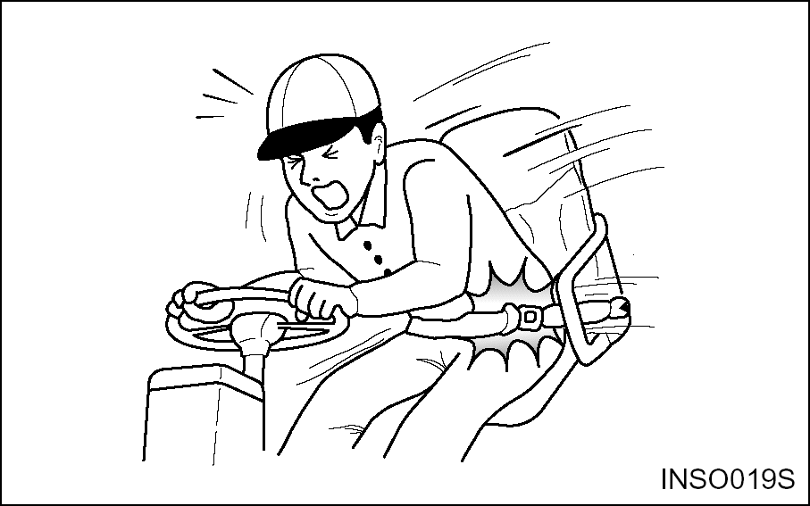

If the seat belt is torn, if pulling motion is interrupted
during extension of the belt, or if the belt cannot be inserted
into the buckle properly, replace the seat belt assembly.
Belt Maintenance – Every 500 service hours. Check that
the belt fastening works properly and that winding device is free
from run lock when jerked. Check that the belt is suitably fastened
to the seat. Check that the seat is correctly secured to the hood
and the chassis. On visual inspection, fastenings must be intact,
otherwise, contact the safety manager.
Warning:
Your Time truck comes equipped with a Time operator restraint
system. Should it become necessary to replace the seat for any
reason, it should only be replaced with another Time operator
restraint system.

In the event of a tipover, the seat and restraint system should
be inspected for damage and replaced, if necessary.
Note:
Operator restraints shall be examined at the regular truck
service intervals. It is recommended that they be replaced if any
of the following conditions are found:
Cut or frayed strap
Worn or damaged hardware including anchor points
Buckle or retractor malfunction
Loosen stitching
Note:
The seat belt may cause the operator to bend at the waist. If
you are pregnant or have suffered from some abdominal disease,
consult a doctor before you use the seat belt.